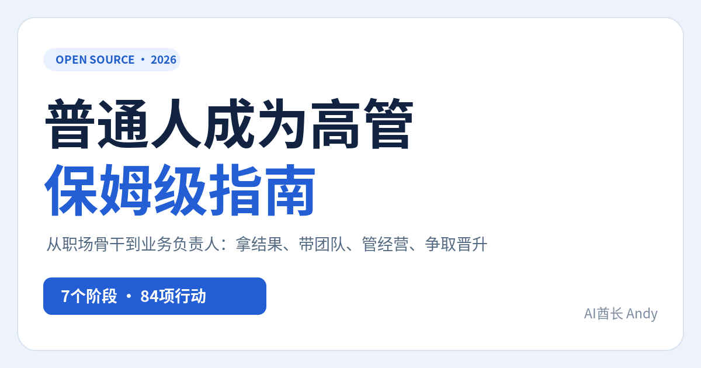
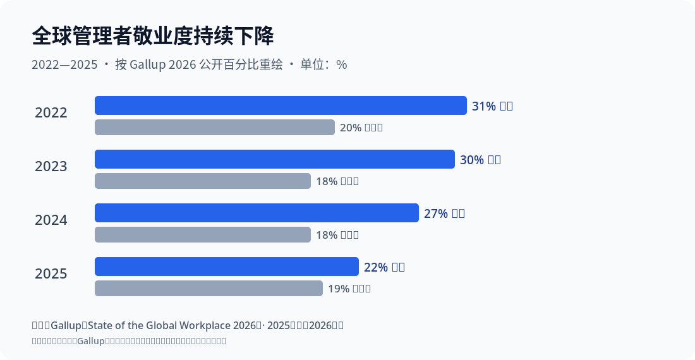

请先看这里： 本仓库是旧版，已于 2026-10-16 存档并停止更新。正式版在 AIPMAndy/how-to-become-an-executive，在线阅读：https://aipmandy.github.io/how-to-become-an-executive/。
<div align="center">
普通人成为高管保姆级指南
How to Become an Executive｜从一个人做好工作，到带项目、带团队、经营业务的一套可执行开源手册

7个阶段 · 84项具体任务 · 10份专题SOP · 33份文本/CSV模板 + 1份Excel工作簿 · 14张原始证据卡（32条研究与法规线索）
在线阅读与互动工具 · GitHub 仓库 · 打开离线阅读页 · 从零开始 · 先做自己的定位 · 高管晋升怎么谈 · 对抗式审核
</div>
别急着学管理，先弄清楚你想负责什么
普通员工完成任务；骨干解决复杂问题；项目Owner协调资源承担一项结果；经理靠团队交付；业务负责人要对经营指标、资源分配和风险做判断。更高级的管理岗位则往往涉及组织方向、人才、战略取舍和治理责任。这是一条方便读者理解的成长路线，不是任何企业统一的职级规定。
《公司法》第265条定义的法定高级管理人员，包括公司的经理、副经理、财务负责人、上市公司董事会秘书和章程规定的其他人员。总监、VP等业务头衔不能自动推定为法定高管身份。国家市场监督管理总局《公司法》原文。
本项目提供的是让读者积累更大责任所需要的真实证据的方法，不承诺晋升、薪酬、职级或耗时。新任主管的90天计划是管理动作的检查点，并非“90天当高管”。
这份指南终于有硬证据：原始研究、真实企业、反例
数据均取自发布者公开原文。每个数字对应特定统计对象，并非“完成本项目就能升职”的预测。全部14张证据卡见 研究原文与反例图谱。
| 核验过的结论 | 出处与对象 | 可以得出的行动 | 不能推出的结论 |
|---|---|---|---|
| 75% 的沃尔玛受薪经理从小时工起步 | 沃尔玛2026年官方文章 | 查内部晋升机制、学历与技能路线 | “基层员工有75%概率当经理” |
| 内部流动最高企业的人均领导晋升次数高79% | LinkedIn 2024企业观察 | 查轮岗、内部竞聘、管理岗位机会 | “个人横向跳岗晋升率提升79%” |
| 335个独立样本支持领导力培训总体有效 | Lacerenza等2017年元分析 | 做真实项目、反馈、间隔练习 | “参加课程即可升高管” |
| 近300名初任管理者、12类挑战 | CCL2024研究 | 补授权、反馈、团队协作 | “每名经理都会遭遇这12项” |
| 180个Google团队识别五项相关因素 | Google re:Work原始说明 | 建立清晰决策权、可靠协作 | “单靠心理安全可提升固定百分比绩效” |
| 2025年全球经理敬业度22% | Gallup 2026全球职场报告 | 升经理前评估资源、压力和组织环境 | “经理只有22%有能力”或“经理晋升率22%” |
| 研究覆盖7800位CEO的历史数据库 | McKinsey2019原始研究 | 学习方向、资源、团队、治理取舍 | “基层员工需要成为小CEO” |

本图按Gallup公开数据重绘，并非官方原图。指标是全球从业者自报的敬业度，不是晋升概率。
研究证据总览 · 3个真实企业案例 · 图表数字与口径 · 证据纠错规则
第一次看，照着做这6步
- 打开 3分钟路线，对照自己的实际岗位而不是Title，选择管理路线或专家路线。
- 找3份真实岗位JD，核对责任、权限、人员、预算、业务指标和任命条件，形成对照表。
- 写3张真实成果证据卡：业务问题、基线、你的决策、他人贡献、结果、归因限制、必要脱敏。
- 只选一种要扩大承担的责任：跨部门项目、直接团队、预算/经营或治理问题；先取得相应授权。
- 填90天计划，为每项设具体结果、授权人、复盘日期和失败时的替代路径。
- 每周对抗复盘：“真是我决定的吗？”“换个口径还成立吗？”“组织有没有这个岗位？”“有没有不可逆的合规风险？”
从第一天就能填：综合操作工作簿（Excel）。
前7天详细操作：SOP01：普通人第一周。你的成果不需要夸张，经得起追问比写得漂亮重要。
七阶段路线
| 阶段 | 首要转变 | 能留下的证据 | 指南 |
|---|---|---|---|
| 01 职业定位 | 从认Title到认责任/机会 | 3份JD+双路线取舍 | 定岗位 |
| 02 核心骨干 | 从完成任务到可核验业务结果 | 成果证据卡+复用SOP | 积累业绩 |
| 03 项目Owner | 从帮助执行到获得有限授权 | 章程、风险台账、止损记录 | 跨部门项目 |
| 04 团队经理 | 从个人救火到团队可持续交付 | 1对1、授权、绩效事实 | 带团队 |
| 05 业务负责人 | 从项目指标到经营取舍 | 经营数据、预算决策和风险 | 看经营 |
| 06 高管候选 | 从资深经历到下一层岗位证据 | 五页晋升包和试任反馈 | 争取机会 |
| 07 履新与治理 | 从取得Title到真实负责任职 | 30/60/90/180天滚动计划 | 履新 |
十份“粉丝可以直接执行”的专题SOP
| 你现在碰到什么问题 | 直接打开 | 最终交付物 |
|---|---|---|
| 不知道自己能不能走管理线 | 01 第一周定位 | 3张岗位JD卡、1份差距图 |
| 业绩很好却说不清价值 | 02 成果证据库 | 3张可质询成果卡 |
| 没有下属也想练管理 | 03 争取项目Owner | 授权章程、RACI、风险和止损条件 |
| 第一次从同事变经理 | 04 上任30天 | 团队目标、1对1、授权记录 |
| 被要求对业务结果负责 | 05 经营账 | 收入-成本-现金解释和资源取舍 |
| 不知道怎么争取晋升 | 06 晋升证据与试任 | 五页晋升包与反馈记录 |
| 接了总监/高管岗位 | 07 履新180天 | 30/60/90/180天阶段成果 |
| 长期得不到机会 | 08 四种晋升困局 | 能力/机会分离与备选路径 |
| 担心越权、法律、利益冲突 | 09 治理底线 | 岗位身份和风险升级记录 |
| 外部面试总监/VP | 10 面试与Offer尽调 | 6类真实案例与尽调清单 |
三条细分路线
AI产品与技术负责人 · 产品/运营/销售负责人 · 财务/HR/技术职能负责人。如果你更喜欢研究、开发和专业深度，专家路线可以是长期选择，不必为了Title强迫自己带团队。
可直接使用的模板
| 类型 | 示例 | 文件 |
|---|---|---|
| 成果归因 | 本人决策、他人贡献、统计口径 | 证据台账 · 证据质量检验 |
| 项目管理 | 谁拍板、谁执行、升级与止损 | 项目章程 · 授权卡 · 风险CSV |
| 团队管理 | 1对1、授权、绩效反馈 | 1对1 · 反馈话术 · 会议节奏 |
| 经营与判断 | 真实收入、毛利、回款、决策记录 | 经营模板 · 口径检查 · 决策日志 |
| 晋升与求职 | 岗位权限、试任、面试、Offer尽调 | 五页晋升包 · 晋升话术 · Offer核对 |
| 履新与风险 | 30/60/90天计划、法律治理、AI安全 | 90天计划 · 治理清单 · AI使用边界 |
一键获取综合工作簿（XLSX）：7个工作表，包含岗位对照、成果证据、项目授权、经营数字示例、晋升材料及90天计划。全部 33 份 Markdown/CSV 模板也放在 templates/，其中CSV可以用 Excel、Numbers 等直接打开，空白栏由读者填写。严禁将公司机密、个人薪酬记录、客户名单或绩效信息上传公开GitHub仓库。
互动网页可以做什么
index.html 为无需安装的独立离线页面，支持按职业阶段筛选和搜索84张任务卡、展开操作与受阻处理、勾选进度、8维证据自评以及90天计划导出。自评是作者设计的自查工具，不具有已验证的招聘预测效度；不能用它决定是否录用、解雇或直接给人打绩效分。
python3 -m pip install -r requirements-dev.txt # 仅重建文档的开发者需要
python3 build.py # 重新生成互动HTML及独立阅读页
python3 -m unittest discover -s tests -v # 文档结构、来源、相对链接、构建检查
node tests/math.test.js # 可选：算法边界测试
没有Python也能双击现成 index.html 查看交互版。阅读资料在各个.html文件中，可脱离GitHub单独阅读。
调研依据与不能直接照搬的地方
- CCL新经理挑战：个人贡献者转换为管理者时，授权与团队协作是典型困难。
- CIPD 2026绩效管理：绩效目标、频繁反馈和支持资源应形成连续过程。
- CIPD 2025继任计划：组织岗位需求与实践培养同样重要。
- Google团队研究：讨论团队心理安全、清晰结构、可靠交付等因素，结论主要来自其组织研究背景。
- McKinsey CEO职责框架：战略、组织、人才、董事会、外部沟通和个人效能。
- 中国《公司法》官方原文：任命、忠实勤勉、利益冲突及法定高管身份。
研究的样本与适用行业并不相同，这些资料提供研究线索，不意味着完成84项任务就一定晋升。逐条论证、样本、数字来源与不能外推的边界，见 14张证据卡；补充参考文献见 REFERENCES。对抗式审核与反例见 审核报告。
GitHub开放共建与服务边界
开放纠错、行业岗位实操、匿名化的失败复盘和可授权模板。欢迎指出任何“照着做仍做不了”的环节，并说明缺了什么权限、事实、资源或官方规定。
若需要求职、职业发展、管理跃迁或 AI 应用方面的个性化讨论，可自愿联系 微信：AIPMAndy，或访问 Andy 个人官网。咨询不承诺晋升或录用结果。**免费开源内容完整可用，不要求付费后才能看到核心方法。**不接收读者在公开Issue上传隐私或企业材料。
项目发起：AI酋长 Andy。 原创指南采用CC BY 4.0，原创程序代码采用MIT；外部研究版权归各机构所有。参考 CONTENT_LICENSE。